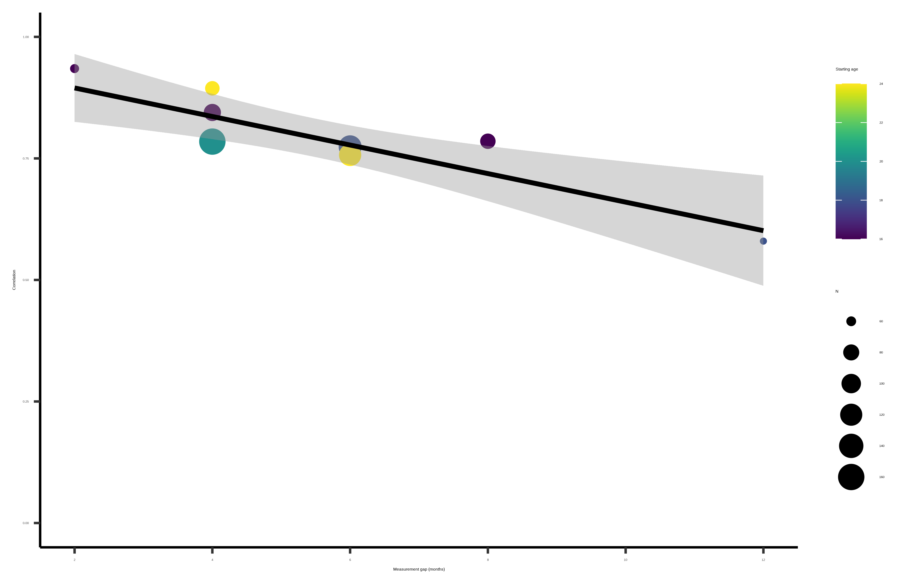
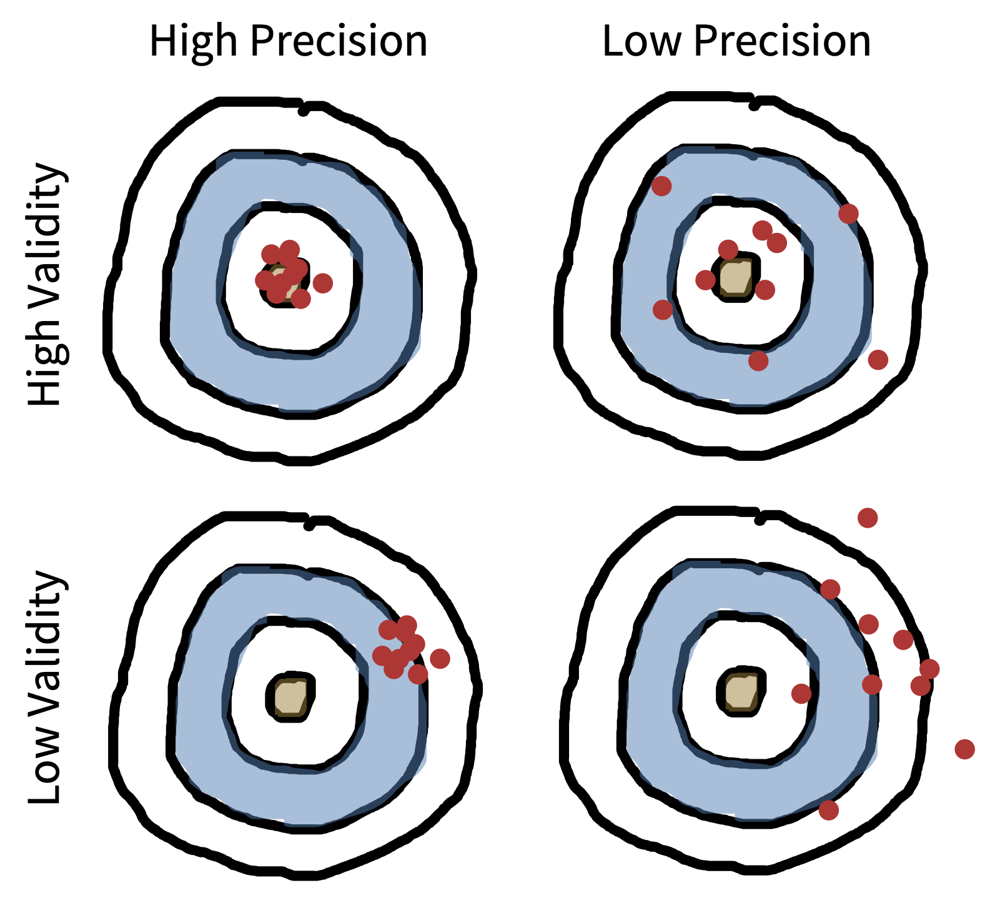
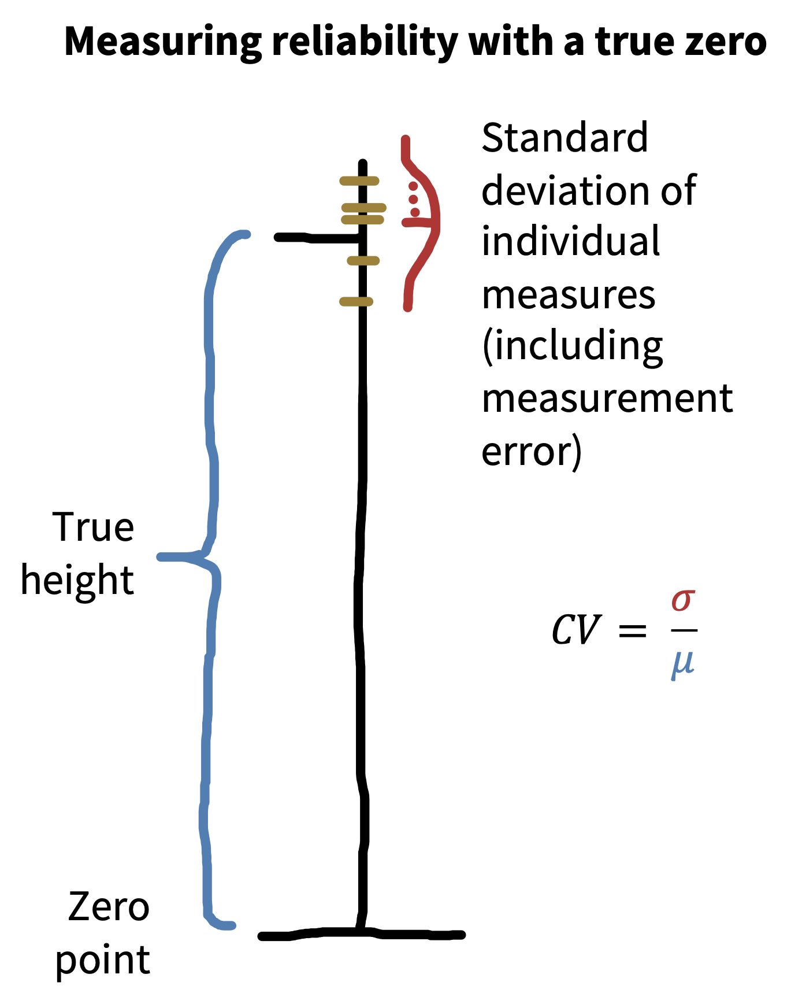
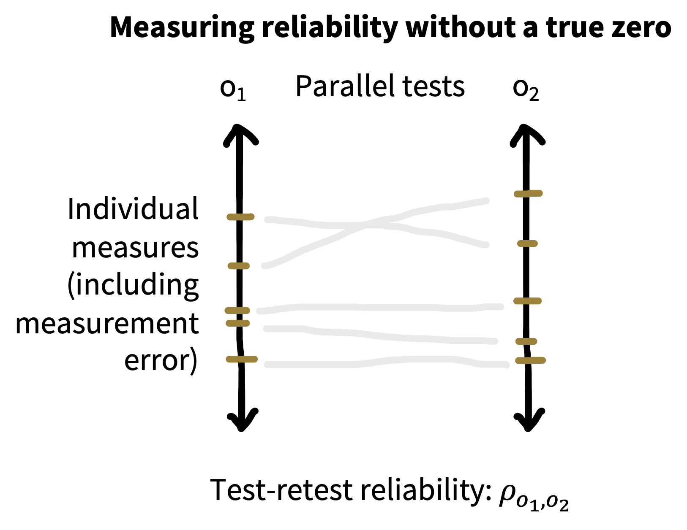
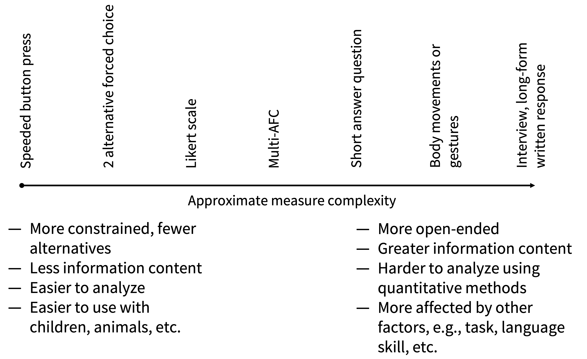
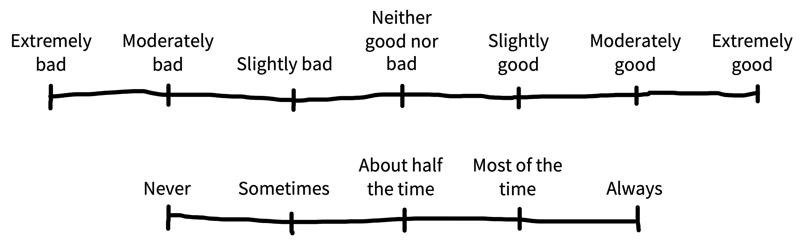

8 测量
注记learning goals
- 讨论心理测量的信度与效度
- 推理不同测量和测量类型之间的取舍
- 识别设计良好的调查问题具有什么特征
- 说明测量灵活性的风险，以及使用多个测量的成本和收益
在本书第二部分，我们介绍了一组以测量为中心的统计技术，用来量化并最大化我们的精度。现在，在第三部分，也就是关于实验规划的部分，我们会继续扩展工具箱，讨论如何设计测量（本章）、manipulation（章 9）和抽样策略（章 10），从而创造和评估实验。这几章构成了我们所谓“experimentology”方法的核心：一系列用来减少偏差、最大化测量精度、并评估可推广性的决策。先从测量开始。
在科学史上，测量的进步总是和知识的进步相伴而行。1 望远镜革新了天文学，显微镜革新了生物学，膜片钳技术革新了生理学。但测量并不容易。即便是看似普通的温度计，也就是让我们可靠测量温度的工具，也经历了数百年的艰苦努力才逐步完善 (Chang 2004)。心理学和行为科学也不例外：我们需要可靠的工具来测量自己关心的东西。本章会讨论心理学测量面临的挑战，以及好工具和坏工具之间的区别。
测量某个东西到底是什么意思？直觉上，我们知道尺子测量的是长度，秤测量的是质量 (Kisch 1965)。如 章 2 所说，这些量是潜在的（未被直接观察到的）。与此相对，单次测量是显现的：它们可以被我们观察到。那么，测量一个心理构念是什么意思？也就是，测量一个假设存在于头脑中的理论量，是什么意思？
首先要记住，并不是所有测量都同样精确。想到物理测量工具时，这一点很明显：卡尺给出的厚度估计会比尺子精确得多。判断测量更精确的一种方式，是重复测量很多次。卡尺得到的测量值通常会彼此更接近，这反映出每次单独测量中的误差更小。心理测量也可以做类似的事：重复测量并评估变异，不过我们后面会看到，这里会更棘手一些。误差更少的测量工具被称为更有信度的工具。2
2 信度和精度是一回事吗？差不多是。容易混淆的是，不同领域会用不同名字称呼这些概念 (Brandmaier 等 2018 中有一张很有用的名称对照表)。这里我们会把信度当作工具本身的属性来讨论，而把精度用于描述测量本身。
3 我们在 章 9 也会讨论 manipulation 的效度。识别某个测量上的因果效应，同样需要对某个构念做操作化。为了识别因果效应，我们必须把某个目标构念和实验中可以具体操纵的东西连接起来，比如刺激或指令。
第二，心理测量并不会直接反映我们感兴趣的潜在理论构念，也就是幸福、智力或语言加工能力这类量。而且，不同于长度和质量这类量，心理学中常常会对“正确的理论量是什么”存在分歧。因此，我们必须测量某种可观察行为，也就是对构念的操作化，然后论证这个测量如何关联到某个被提出的目标构念（有时还要论证这个构念是否真的存在）。这个论证关乎测量的效度。3
信度和效度这两个概念，为评估心理测量以及它在多大程度上服务于研究者目标提供了一套概念工具。
8.1 信度
信度是一种描述测量相对于噪声能产生多少信号的方式。直觉上，如果噪声更少，那么针对同一个量的不同测量之间会更加相似；图 8.1 中靶心上的点聚得更紧，就表现了这一点。但我们怎么测量信号和噪声？

注记case study
一个有信度也有效度的儿童词汇测量
任何和小孩子一起工作过，或自己有孩子的人，都能体会到儿童早期语言有多大差异。有些孩子很早就说得很清楚，还能说长句；另一些孩子则比较吃力。这种差异似乎和后来的学校表现有关 (Marchman 和 Fernald 2008)。因此，我们有很多理由想要精确测量“儿童早期语言能力”这个目标潜在构念。
把儿童带进实验室可能成本很高，因此一个常用的替代方案是 MacArthur Bates Communicative Development Inventory（简称 CDI）：这是一份让父母标记孩子会说或能理解哪些词的表格。CDI 表格基本上就是很长的词汇清单。但父母报告是不是一个有信度或有效度的儿童早期语言测量呢？
下面会看到，测量 CDI 信度的一种方式，是计算同一个孩子两次填写表格所得分数之间的相关。不幸的是，这个分析有一个问题：两次观察之间等得越久，孩子本身变化就越大！图 8.2 展示了两次 CDI 之间的相关，可以看到随着观察间隔变长，相关一开始很高，随后逐渐下降 (Frank 等 2021)。
既然 CDI 表格是相对有信度的工具，它们有效度吗？也就是说，它们真的测量了目标构念，也就是儿童早期语言能力吗？Bornstein 和 Haynes (1998) 收集了许多不同的儿童语言测量，包括 Early Language Inventory（ELI，一种早期 CDI 表格）和其他“金标准”测量，比如儿童真实语言样本的转录。CDI 分数和这些不同测量都高度相关，说明 CDI 是这个构念的有效测量。
信度和效度证据结合起来说明，CDI 是儿童早期语言数据的有用来源，而且相对便宜；事实上，它们已经成为这个年龄段最常见的评估之一！
8.1.1 测量尺度

在物理科学中，常常用变异系数来测量一个工具的精度 (Brandmaier 等 2018)： \[ \text{CV} = \frac{\sigma_w}{\mu_w} \] 其中 \(\sigma_w\) 是个体内多次测量值的标准差，\(\mu_w\) 是这些测量值的平均值（图 8.3）。
想象我们测量一个人的身高五次，得到 \(171\) cm、\(172\) cm、\(171\) cm、\(173\) cm 和 \(172\) cm。这些数值是这个人的真实身高（我们假设他有一个真实身高！）和一些测量误差的组合。现在我们可以用这些测量来计算变异系数，也就是 \(0.005\)。这说明相对于正在测量的整体量，变异非常有限。为什么心理测量不能直接这样做呢？
思考这个问题会让我们绕到心理学研究中使用的不同测量尺度上 (Stevens 1946)。我们例子里的身高测量处在所谓比率尺度上：在这种尺度上，数值之间的间距相等，并且有一个真正的零点。这类尺度在物理量中很常见，但在心理学中相对少一些（反应时是一个重要例外）。更常见的是区间尺度，它没有真正的零点。例如，IQ（以及其他标准化分数）意在捕捉某个维度上的区间变化，但零没有意义：IQ 为零并不对应任何特定解释。4
4 在足够严格的意义上可以证明，比率尺度和区间尺度（以及另一个介于两者之间的尺度）是实数上唯一可能的尺度 (Narens 和 Luce 1986)。
顺序尺度也经常使用。这些尺度有顺序，但各级之间不一定等距。例如，教育成就水平（“小学”、“高中”、“一些大学教育”、“大学”、“研究生院”）是有序的，但没有意义说“高中”和“小学”的距离等于“研究生院”和“大学”的距离。Stevens 层级中的最后一种是名义尺度，其中连顺序也不存在。例如，种族是一个无序尺度，其中有多个类别，但这些类别没有内在顺序。这个层级见 表 8.1。
| Scale | Definition | Operations | Statistics |
|---|---|---|---|
| Nominal | Unordered list | Equality | Mode |
| Ordinal | Ordered list | Greater than or less than | Median |
| Interval | Numerical | Equality of intervals | Mean, SD |
| Ratio | Numerical & zero | Equality of ratios | Coefficient of variation |
关键是，不同尺度类型适用的汇总指标不同。如果你有一份无序列表，比如调查中关于种族的问题选项，你可以呈现众数（最可能的回答）。去想中位数是什么甚至都没有意义，因为没有顺序！对于有序的教育水平，中位数是可能的，但不能计算平均数。对于“数学测试正确题数”这样的区间变量，则可以计算平均数和标准差。5
5 你可能会想，“正确题数”是不是比率变量？但零真的有意义吗？它真的对应“没有数学知识”吗？还是只是代表“数学知识少于这份测试所要求的水平”？
现在我们可以回答最初的问题了：为什么不能用变异系数来量化信度。除非你有一个带真正零点的比率尺度，否则就不能计算变异系数。想想 IQ 分数：按照惯例，标准化 IQ 分数目前被设定为平均数 \(100\)。如果我们多次测试某个人，发现其测试分数的标准差是 4 分，那么我们可以把测量精度估计为 \(4/100 = 0.04\) 的“CV”。但由于 IQ 为零没有意义，我们完全可以把总体的平均 IQ 设为 \(200\)。测试本身没有变，于是 CV 会变成 \(4/200 = 0.02\)。按这个逻辑，我们只是重新缩放了测试，就把测量精度翻倍了！这显然说不通。
注记depth
心理测量早期争论
Psychology cannot attain the certainty and exactness of the physical sciences, unless it rests on a foundation of … measurement.
—Cattel (1890, p. 373)
实验心理学的奠基者们迷恋测量，这并非巧合 (Heidelberger 2004)。 测量被视为心理学成为一门合法定量科学路上面临的主要障碍。 例如，Hermann von Helmholtz（Wilhelm Wundt 的博士导师）最后几篇作品之一，是 1887 年一篇题为 “Zahlen und Messen” (“Counting and Measuring”，见 Darrigol 2003) 的哲学论文。 同一年，Fechner (1987 [1887]) 在 “Über die psychischen Massprincipien”（“On psychic measurement principles”）中明确讨论了测量的基础问题。
许多早期测量争论都围绕新兴的心理物理学展开，也就是如何把客观的物理刺激（如光、声音、压力）和它们在心中产生的主观感觉联系起来。 例如，Fechner (1860) 感兴趣的是一个叫“最小可觉差”的量，即我们的感官能够分辨出的刺激最小变化。 他主张存在一种有规律的（对数）关系：比如亮度强度的对数变化，对应于人们报告强度的线性变化（差一个常数）。 换句话说，感觉可以通过最小可觉差这类工具来测量。
在今天听来，“可测量性”这个基本主张居然有争议，可能有些令人意外，尽管心理物理函数的具体形式确实还会继续被争论。 但这个主张引发了一场非常尖锐的争论，最终导致了所谓 Ferguson Committee 的成立。这个委员会由 British Association for the Advancement of Science 于 1932 年成立，目的是调查这类心理物理程序是否真的能算作对任何东西的定量“测量” (Moscati 2018)。 委员会无法得出结论，物理学家和心理学家僵持不下：
Having found that individual sensations have an order, they [some psychologists] assume that they are measurable. Having travestied physical measurement in order to justify that assumption, they assume that their sensation intensities will be related to stimuli by numerical laws … which, if they mean anything, are certainly false.
—Ferguson 等 (1940, p. 347)
分歧的核心在于，对 quantity 的经典定义要求一种严格的可加结构。 一个属性只有在存在有意义的拼接操作时，才被认为是可测量的。 例如，重量是一个可测量属性，因为把装有三块石头的袋子放到秤上，得到的数值和把三块石头分别放到秤上再把数值相加是一样的（在科学哲学中，具有这种拼接属性的属性被称为“广延”属性，与“强度”属性相对）。 Ferguson Committee 最重要的成员之一 Norman Campbell，刚刚以这种方式定义了基本测量 (例如 Campbell 1928)，并把它和派生测量相对照；后者指的是基于一个或多个基本测量计算某个函数。 按照 Ferguson Committee 上物理学家的看法，测量心理感觉是不可能的，因为它们永远无法建立在任何具有这种可加操作的基本尺度之上。 把人的感觉像重量或长度一样拆成几个部分是说不通的：感觉并不是可以组合的“多少”或“数量” (Cattell 1962)。 到委员会成立时，即便是 Donders (1969 [1868]) 用来测量心理过程速度的“减法法”中那种直观的可加逻辑，也出于同样理由受到了怀疑（例如，在一本早期教材中，Woodworth (1938, p. 83) 断言：“We cannot break up the reaction into successive acts and obtain the time for each act”）。
Ferguson Committee 调查的主要对象，是心理学家 S. S. Stevens。他声称自己使用心理物理工具测量了响度感觉。 在被经典测量框架排斥之后，他开始发展一种替代性的“操作主义”框架 (Stevens 1946)。在这个框架里，物理学家承认的经典比率尺度只是给事物分配数字的若干方式之一（见上面的 表 8.1）。 Stevens 的框架迅速传播开来，催生了大量被提出的测量。 不过，操作主义在心理学之外仍然有争议 (Michell 1999)。 Stevens (1946, p. 677) 立场中最极端的版本（“Measurement … is defined as the assignment of numerals to objects or events according to rules”）允许研究者用一个测量来操作性地定义构念 (Hardcastle 1995)。 例如，人们可以说智力这个构念就是 IQ 所测到的那个东西。 于是，研究者自己决定他们提出的测量应该属于哪一种尺度类型。
在 章 2 中，我们勾勒了一种略有不同的看法，它更接近某种建构实在论 (Giere 2004; Putnam 2000)。 像幸福这样的心理构念被认为独立于任何特定操作化而存在，这让我们更有基础去讨论同一个构念的不同测量方式各有什么优点和缺点。 换句话说，我们不能想怎么分配数字就怎么分配。 某个特定构念或量在某个特定尺度上是否可测量，应该被当作一个经验问题。
测量理论的下一个重大突破，出现在 1960 年代数学心理学诞生之时；它试图为心理测量建立更严格的基础。 这一努力最终形成了三卷本 Foundations of Measurement 系列 (Krantz 等 1971; Suppes 等 1989; Luce 等 1990)，它已经成为每个想理解非物理科学中测量问题的心理学学生的经典读物。 其中一个关键突破，是把负担从测量构念自身的（可加性）转移到测量构念彼此结合时产生的（可加）效应上：
When no natural concatenation operation exists, one should try to discover a way to measure factors and responses such that the ‘effects’ of different factors are additive.
—Luce 和 Tukey (1964, p. 4)
这种现代观点大体上影响了我们在这里描述的立场。
8.1.2 测量信度
那么，当我们没有真正的零点时，应该如何测量信号和噪声呢？我们仍然可以查看重复测量之间的变异，但不是把测量之间的变异和平均数相比，而是把它和另一种变异相比，例如人与人之间的变异。接下来，我们会讨论区间尺度上的信度，但许多相同工具也已经被发展出来，用于顺序和名义尺度。
想象你正在开发一种工具，用来测量某种认知能力。我们假设每个参与者都有一个真实能力 \(t\)，就像上面的例子中他们有一个真实身高一样。不过，每次我们用这个工具测量真实能力时，它都会受到某些测量误差的影响。设定这个误差服从均值为零的正态分布，也就是说，它不会偏倚测量，只是加入噪声。结果就是我们的观察分数 \(o\)。6
6 我们用来介绍这一组思想的方法叫经典测验理论。还有其他更现代的替代方法，但 CTT（通常这么叫）是思考这些概念的好起点。
采用这种方法，我们可以定义一个相对版本的变异系数。 其想法是，测量信度是真实分数方差（信号）在观察分数方差（包含噪声）中所占的比例。如果 \(\sigma^2_t\) 是真实分数方差，\(\sigma^2_o\) 是观察分数方差，那么这个比率就是： \[ R = \frac{\sigma^2_t}{\sigma^2_o}. \] 当噪声很高时，分母会很大，\(R\) 会下降到 \(0\)；当噪声很低时，分子和分母几乎相同，\(R\) 会接近 \(1\)。
这一切听起来很好，只有一个问题：如果不知道真实分数及其方差，就无法用这个公式计算信度。但如果我们已经知道这些东西，就根本不需要测量了！
有两种主要方法可以从数据中计算信度。每种方法都做了一个假设，让你绕过这个根本问题：我们只能接触到观察分数，而不能接触到真实分数。让我们在数学测试的语境中想一想。
Test-retest reliability。 想象你有两套平行版本的数学测试，它们难度相同。因此，你认为学生在任意一个版本上的分数都会反映同一个真实分数，只是带有一些噪声。在这种情况下，你可以用这两组观察分数（\(o_1\) 和 \(o_2\)）来计算工具的信度，只需要计算它们之间的相关（\(\rho_{o_1, o_2}\)）。其逻辑是，如果两个版本都反映同一个真实分数，那么它们之间共享的方差（按 章 5 中的说法就是协方差）就是 \(\sigma^2_t\)，也就是真实分数方差，也正是我们原本想知道却拿不到的变量。因此，test-retest reliability 是一种非常方便的信度测量方式（图 8.4）。

7 问题在于，每一半都……只有原始工具的一半长。为了解决这个问题，可以使用一种叫 Spearman-Brown correction 的校正，用来估计完整长度工具的预期相关。你还需要确保测试不会从开头到结尾越来越难。如果确实会变难，你可能要把偶数题和奇数题分别作为两个平行版本。
内部信度。如果你没有两套平行版本的测试，或者因为某些原因不能测两次，那么还有另一个选择。假设你的数学测试有多个问题（这是个好主意！），你就可以把测试拆成几部分，把每个子部分的分数当作平行版本。最简单的方式是把工具分成两半，计算参与者在两半上的分数相关；这个量叫split half reliability。7
另一种计算内部信度（测试的一致性）的方法，是把每个 item 当作一个子工具，并计算所有拆分方式下 split-half 相关的平均值。这个方法得到的统计量是 Cronbach’s \(\alpha\)（“alpha”）。\(\alpha\) 被广泛报告，但也被广泛误解 (Sijtsma 2009)。第一，它其实是信度的下界，而不是信度本身的好估计。第二，它常被误解为证明一个工具产生的分数“内部一致”，但它并不能证明这一点；它不是维度性的准确概括。\(\alpha\) 是一个标准统计量，但应该谨慎使用。
最后补充一点：信度这个概念也常用来量化不同观察者对同一刺激评分的一致性（inter-rater 或 inter-annotator reliability），例如让两个编码者评价视频中某个人看起来有多攻击性。最常见的标注者间一致性测量，是用于类别一致性的一种分类指标，叫 Cohen’s \(\kappa\)（“kappa”）；不过，对于连续数据，也可以使用组内相关系数（见下面的 Depth 框），以及许多其他指标。
注记depth
信度悖论！
用我们这里描述的方法计算信度有一个大问题：因为信度被定义为两个变异量的比率，它永远都会相对于样本中的变异。因此，如果一个样本的变异更小，信度就会下降！
一种正式定义信度的方法，是使用组内相关系数（ICC）： \[ \text{ICC} = \frac{\sigma^2_b}{\sigma^2_w + \sigma^2_b} \] 其中 \(\sigma^2_w\) 是测量中的被试内方差，\(\sigma^2_b\) 是测量中的被试间方差。分母来自把上面信度公式中的总观察方差 \(\sigma^2_o\) 做分解。
所以现在，我们不是把变异和平均数相比，而是把一个维度上的变异（参与者之间）和总变异（参与者内加参与者间）相比。ICC 很棘手，而且根据你的数据结构和分析目的，有好几种不同版本可用。McGraw 和 Wong (1996) 和 Gwet (2014) 对如何在不同情境下计算和解释这个统计量提供了大量指导。
回到我们 case study 中显示出高信度的 CDI 数据。现在想象我们把样本限制在 16–18 个月儿童的变化分数上（之前的样本是 16–30 个月）。在这个限制更严格的子集中，整体词汇量会更低，并且彼此更相似；因此，一个孩子内部的平均变化量（\(\sigma_w\)）相对于孩子之间的差异（\(\sigma_b\)）会更大。这会让我们的信度下降，即便我们是在完全同一批数据的一个子集上计算它。
这听起来还不算太糟。但我们可以构造出同一个问题更令人担忧的版本。假设我们在管理 CDI 时非常马虎，制造了大量参与者间变异， 比如给不同家庭不同指令。这种做法实际上会提高我们的 split-half reliability 估计（因为提高了 \(\sigma_b\)）。参与者内变异保持不变，但参与者间变异会升高！你可以把这叫作“信度悖论”：更马虎的数据收集，反而可能导致更高的信度。
我们需要对自己在信度计算中量化的是哪些变异来源保持敏感，也就是同时关注分子和分母。如果我们计算 split-half reliability，通常是在比较测试题目之间的变异（来自某个题库）和个体之间的变异（来自某个总体）。这两种抽样决策都会影响信度：如果总体更有变异，或者题目更少变异，我们会得到更高的信度。总之，信度是相对的：信度测量依赖于它被计算时的具体情境。
8.1.3 计算信度的实用建议
如果你不知道实验中测量的信度，你就有浪费自己和参与者时间的风险。Ignorance is not bliss。信度更高的测量会带来对目标因果效应更精确的测量，因此也会降低所需样本量。
Test-retest reliability 通常是实践中最保守的信度测量。Test-retest 估计不仅包含测量误差，也包含参与者在不同测试时段之间的状态变化，以及工具不同版本之间差异造成的方差。这些真实世界中的量在内部信度估计中不存在，因而内部信度可能会让你错误地以为工具中存在比实际更多的信号。虽然 \(\alpha\) 在理论上是信度的下界，但在实践中，test-retest 准确性常常低于 \(\alpha\)，因为它整合了所有这些其他变异来源。测量 test-retest reliability 很费力，部分原因是你需要两个不同版本的测试（以避免记忆效应）。不过，如果你计划使用某个工具不止一两次，这项工作很可能是值得的！
最后，如果你的工具包含多个测量 item，请确保评估它们如何影响工具信度。也许你有几个调查问题，想用来测量同一个构念；也许你有多个内容或难度不同的实验 vignette。其中有些 item 可能不会提高工具信度，有些甚至会拉低信度。至少，你应该始终可视化各 item 的反应分布，快速检查是否存在地板效应和天花板效应，也就是 item 的回答总是聚集在量表底端或顶端，限制了它们的用途；同时也要看看是否有某些 item 和其他 item 不相关。
如果你正在考虑开发一个会反复使用的工具，使用更复杂的心理测量模型来估计工具反应的维度性以及单个 item 的属性，可能会很有用。如果你的 item 是二元答案，比如测试题，那么item response theory 是一个不错的起点 (Embretson 和 Reise 2013)。如果你的 item 更像是连续（区间或比率）尺度上的评分，那么可以看看因子分析及相关方法 (Furr 2021)。
注记accident report
被浪费的努力
低信度测量会限制你检测测量之间相关的能力。Mike 在研究生阶段曾花了几个月却毫无结果：他让几十名参与者完成一组语言加工任务，然后计算任务之间结果的相关。每次数据收集结束，总会有一个或另一个（虚假的）相关出现在数据分析里。总有什么东西和另一些东西相关。幸好，他总是会试图在新样本中重复这个相关；而在下一个数据集中，我们试图重复的相关会变成零，但另一个（同样很可能虚假的）相关又会出现。
这个练习是在浪费时间，因为多数任务信度太低，以至于即便它们彼此真的高度相关，如果没有巨大样本量，也几乎不可能检测出这种关系。（如果有人提醒他 multiplicity 校正 [章 6]，也会很有帮助。）
对这类个体差异设计，一个有用的经验法则是：两个变量 \(x\) 和 \(y\) 之间能够观察到的最大相关，是它们信度乘积的平方根：\(\sqrt{r_x r_y}\)。所以，如果你有两个信度都是 \(0.25\) 的测量，那么它们之间可测得的最大相关也只有 0.25！这类方法现在经常被用于认知神经科学（以及其他领域），用来计算所谓测量的noise ceiling：原则上可能被预测到的最大信号量 (Lage-Castellanos 等 2019)。如果你的样本量太小，以至于无法测量低于 noise ceiling 的相关（见 章 10），那么这个研究就不值得做。
8.2 效度
在 章 2 中，我们把理论建构过程说成描述构念之间关系的过程。但为了检验理论，必须测量这些构念，这样才能检验它们之间的关系！因此，测量和测量建构与理论建构紧密相关，而效度这一概念处在核心位置。8
8 一些作者把“效度”当作一个更宽泛的概念，可以包括例如统计问题 (Shadish, Cook, 和 Campbell 2002)。我们这里关心的效度含义更具体一些。我们聚焦于构念效度，也就是测量和构念之间的关系。
9 这个比喻是一个不错的粗略指引，但它没有区分两种情况：一种工具是系统性偏倚的（例如对某个群体的分数估计过低），另一种工具是无效的（因为它测量的是错误构念）。
有效度的工具测量的是目标构念。在 图 8.1 中，无效度被画成偏差：靶子上的孔聚得很紧，但位置错了。9 既然目标构念没有被观察到，你怎么判断一个测量是否有效？不存在单一的效度检验 (Cronbach 和 Meehl 1955)。相反，如果有证据说明该测量能融入更宽广的理论，特别是能关联到它本应测量的特定构念，那么这个测量就是有效的。例如，它应该和同一构念的其他测量强相关，但和不同构念的测量没有那么相关。
怎样确立一个测量能融入更宽广的理论？测量效度通常通过一种论证来确立，这种论证会调用不同来源的支持 (Kane 1992)。以下是一些可以用来支持测量和构念之间关系的方式：
- 表面效度： 测量看起来像这个构念，因此直觉上认为它测量了这个构念是合理的。表面效度是比较弱的效度证据来源，因为它主要依赖前理论直觉，而不是任何定量评估。例如，反应时通常与智力测试结果相关 (例如 Jensen 和 Munro 1979)，但它看起来并不是一个有表面效度的智力测量，因为“只是快”并不符合我们对“聪明”意味着什么的直觉！
- 生态效度： 测量和人们生活中的情境相关。例如，在课堂中对儿童行为自我控制的评分，比实验室中执行的反应时任务更像是一个有生态效度的执行功能测量。生态效度论证可以基于实验任务、刺激，以及实验的总体设置 (Schmuckler 2001)。研究者会根据自己的目标和理论取向，对生态效度赋予不同权重。
- 内部效度： 通常以负面方式使用。所谓“对内部效度的挑战”，指的是测量实施方式削弱了测量与构念之间关系的情况。例如，如果数学测试后面的 item 表现更差，是因为应试者疲劳，而不是因为他们对概念掌握更差，那么这个测试可能存在内部效度问题。10
- 聚合效度： 展示效度的经典策略，是证明一个测量和同一构念的其他候选测量相关（通常是相关）。当这些关系被同时测量时，有时称为同时效度。正如我们在 章 2 中提到的，幸福的自我报告和朋友及家人的独立评分相关，这说明两者测量的是同一个底层构念 (Sandvik, Diener, 和 Seidlitz 1993)。11
- 预测效度。 如果某个测量能够预测后来对同一构念的其他测量，或预测可能具有更广泛意义的相关结果。预测效度常用于毕生发展研究和发展研究中，在这些领域，一个测量能否预测未来有意义的人生结果（如教育成功）尤其受重视。例如，课堂自我控制评分（以及其他测量）似乎能强烈预测后来的健康和财富结果 (Moffitt 等 2011)。
- 区分效度。 如果能够证明某个测量不同于另一个构念的测量，这种证据就有助于确立它和目标构念之间的特定联系。例如，幸福（更具体说，生活满意度）的测量可以和乐观的测量以及积极、消极情感的测量区分开，这说明它们是不同构念 (Lucas, Diener, 和 Suh 1996)。
10 这个概念也常被说成和 manipulation 的效度有关，例如，当构念的 manipulation 被混淆，并且另一个心理变量也被同时操纵时。我们会在 章 9 进一步讨论内部效度。
11 这种聚合效度的思想和我们在 章 2 中描述的 holism 有关。如果一个测量和其他有效测量相关，那么它就是有效的；而那些其他测量本身也只有在第一个测量有效时才有效！测量之所以有效，是因为理论有效；理论之所以有效，是因为测量有效。这种循环性是建构心理学理论中困难但也许不可避免的一部分（见上面关于测量史的 Depth 框）。我们研究人类心智时，并没有一个客观的起点。
8.2.1 实践中的效度论证
让我们看看如何为 CDI，也就是 case study 中的词汇工具，做一个效度论证。首先，CDI 有表面效度：它显然关于早期语言能力。相比之下，虽然儿童身高很可能和他们的早期语言能力相关，但由于它缺乏表面效度，我们应该对这个测量保持怀疑。此外，CDI 显示出良好的聚合效度和预测效度。 在同时测量时，CDI 与儿童真实语音转录以及标准化语言评估中的证据高度相关（如上面 case study 所讨论）。在预测方面，2 岁时的 CDI 分数与小学阶段的阅读分数相关 (Marchman 和 Fernald 2008)。
另一方面，CDI 的使用者必须避免对他们所收集数据的内部效度造成挑战。例如，有些 CDI 数据会因为说明不清或数据收集流程很差而受损 (Frank 等 2021)。此外，CDI 的支持者和批评者也会争论它的生态效度。 让父母和照护者来报告孩子的能力，这确实有相当强的生态效度，因为他们是自己孩子的专家。另一方面，填写一份估计语言能力的结构化表格，对一些高教育背景家庭来说，可能比对低教育背景家庭更熟悉。因此，批评者可以合理地说，跨社会经济阶层比较 CDI 分数可能是一种无效使用 (Feldman 等 2000)。
8.2.2 避免可疑的测量实践！
实验研究者有时倾向于临时编造一些 ad hoc 测量。这样做时，重要的是必须用信度和效度来说明自己的选择。表 8.2 给出了一组问题，用来引导对测量实践做出更周到的报告。
| Question | Information to Report |
|---|---|
| What is your construct? | Define construct, describe theory and research. |
| What measure did you use to operationalize your construct? | Describe measure and justify operationalization. |
| Did you select your measure from the literature or create it from scratch? | Justify measure selection and review evidence on reliability and validity (or disclose the lack of such evidence). |
| Did you modify your measure during the process? | Describe and justify any modifications; note whether they occurred before or after data collection. |
| How did you quantify your measure? | Describe decisions underlying the calculation of scores on the measure; note whether these were established before or after data collection and whether they are based on standards from previous literature. |
需要特别小心的一个大问题是，研究者有时会在数据收集之后修改自己的量表和量表计分实践（例如，从调查中删掉 item，或重新缩放回答）。这种事后修改测量的做法有时可以由数据来正当化，但它也可能看起来很像 \(p\)-hacking！ 如果研究者在看过数据之后修改测量策略，就需要披露这个决定，而且它可能会削弱统计推断。
注记accident report
这可真是灵活测量！
竞争性反应时任务（CRTT） 是一种基于实验室的攻击性测量。参与者被告知他们正在和另一名玩家进行反应时游戏，并被要求设定会播放给对手的噪声音爆参数。不幸的是，在一项关于 CRTT 文献的分析中，Elson 等 (2014) 发现不同论文在使用 CRTT 时，使用了差异巨大的任务计分方法。有时分析聚焦于噪声音爆的音量，有时聚焦于持续时间。有时这些分数会被转换（通过对数）或设定阈值。有时它们会被合并成一个总分。Elson 对这种灵活性感到非常担心，于是建立了一个网站（https://flexiblemeasures.com）来记录他观察到的变异。
截至 2016 年，Elson 发现有 \(130\) 篇论文使用了 CRTT。 在这些论文中，他记录了惊人的 \(157\) 种量化策略。一篇论文报告了从这个测量中提取数值的十种不同策略！更令人担心的是，Elson 和同事发现，当他们在自己的数据上尝试其中一些策略时，不同策略会导致非常不同的效应量和统计显著性水平。实际上，他们可以根据自己选择的计分方式，让一个发现看起来更大或更小。
通过多个预先指定的测量来三角定位一个构念，可以是一件好事。但 CRTT 分析的问题在于，测量策略的变化似乎是以事后、数据驱动的方式做出的，目的是最大化实验 manipulation 的显著性（就像我们在 3 和 6 章讨论过的 \(p\)-hacking 一样）。
这项对 CRTT 测量使用情况的考察有几点启示。第一，也是最令人不安的一点，文献中对 CRTT 数据的分析可能存在未披露的灵活性；研究者利用缺乏标准化这一点，尝试许多不同分析版本，并报告最有利于自己假设的那个。第二，事实上哪一种 CRTT 行为量化方式最有信度和效度，目前并不知道。既然其中一些版本大概比另一些更好，研究者使用次优量化时，实际上就是在“把钱留在桌上”。结果是，如果研究者采用 CRTT，他们很难从文献中获得关于应采用哪种量化方式的指导。
8.3 如何选择一个好的测量？
理想情况下，你想要一个有信度也有效度的测量。怎么得到它？一个重要的第一原则是使用已经存在的测量。也许别人已经完成了整理信度和效度证据的辛苦工作；在这种情况下，你大概率会想借用这些工作。标准化测量通常适用范围很广，因此人们可能倾向于抛弃它们，因为它们并不是专门为我们的研究量身定做的。但标准化测量的收益很大。你不仅可以用既有文献来为测量辩护，还可以通过把绝对分数和其他报告进行比较，得到一个重要的总体变异指标。12
12 比较绝对测量值是对数据做“sanity check”的一个非常重要技巧。如果你的测量和你要 follow up 的论文中很不一样（例如，反应时长得多或短得多，或测试准确率高得多或低得多），这可能是某些东西出了问题的信号。
如果你不使用别人已有的测量，就需要自己造一个。大多数实验者在某个阶段都会走上这条路，但如果你这样做，请记住，你需要弄清楚如何估计它的信度，也需要弄清楚如何为它的效度做论证！
我们几乎可以给人们做的任何事情分配数字。我们可以对儿童探索性游戏做实验，计算他们与另一个孩子互动的次数 (Ross 和 Lollis 1989)；也可以做一个关于攻击性的实验，量化参与者给别人盛了多少辣酱 (Lieberman 等 1999)。不过，多数时候我们会从相对较小的一组操作变量中选择：询问调查问题、收集选择和反应时、测量眼动等生理变量。除了沿用这些惯例之外，我们如何为特定实验选择正确的测量类型？
对于应该测量行为的哪一方面，并没有硬性规则；但这里我们会聚焦两个维度，它们可以帮助我们整理可能测量目标的广阔空间。13 第一个维度是简单行为到复杂行为的连续体。第二个维度是显性、自愿行为与隐性或非自愿行为之间的焦点差异。
13 一些作者区分“自我报告”和“观察性”测量。这个区分乍看很简单，但实际上会变得很复杂。面部表情算“自我报告”吗？语言并不是人们彼此交流的唯一方式，许多行动也是有意图地用于交流的 (Shafto, Goodman, 和 Frank 2012)。
8.3.1 简单行为 vs 复杂行为
图 8.5 展示了简单行为和复杂行为之间的连续体。最简单的可测量行为往往是按键，例如：
- 在逐词自定步速阅读研究中，按键前进到下一个词；
- 在词汇判断任务中选择“是”或“否”；以及
- 在不同备选项之间做强迫选择，以表明之前见过哪一个。

这些具体测量，以及许多类似测量，是大量认知心理学研究的日常基本工具。因为它们快速、容易解释，这些任务可以在许多 trial 中反复执行。它们也可以在更广泛的总体中使用，包括幼儿，有时甚至包括非人动物，只要做适当改编即可。（这些范式还有一个额外好处：它们可以产生有用的反应时数据，我们会在下面进一步讨论。）
相比之下，心理学家研究过范围非常广的复杂行为，包括：
- 开放式口头访谈；
- 书面表达，例如通过笔迹或写作风格；
- 身体运动，包括手势、行走或舞蹈；以及
- 绘画或制作物品。
研究这些行为有很多理由。第一，这些行为本身可能就是目标任务的例子（例如，研究绘画以理解艺术表达的起源）。或者，这个行为也可能代表其他更复杂的目标行为，例如在打字研究中，用打字行为作为词汇知识的 proxy (Rumelhart 和 Norman 1982)。
复杂行为通常允许非常多样的测量策略。因此，任何使用复杂行为某个特定测量的实验，通常都需要在前期做大量工作，说明为什么选择这种测量策略，例如如何量化舞蹈、手势或打字错误，并对其信度提供一定保证。此外，让参与者在相同条件下重复复杂行为许多次，通常也困难得多。想象一下，让某人画几百张草图，而不是按几百次键！因此，选择复杂行为，往往意味着放弃大量简单 trial，换取少量更复杂的 trial。
复杂行为在一个研究计划的开头或结尾尤其有用。在一组实验的开头，它们可以让你看到目标行为的丰富性，并洞察影响它的许多因素。在结尾，它们可以提供一个有生态效度的测量，用来补充一个有信度但更人工化的实验室行为。
不过，行为越复杂，它在个体之间的变异就越大，受环境和情境因素影响也越大。这些因素可能是现象的重要组成部分，但也可能是很难被实验控制的 nuisance factor。14 简单测量通常更容易使用，因此也更容易在一组实验中反复部署，用来迭代你的 manipulation 并检验因果理论。
14 如果设计不够仔细，复杂、开放式行为（例如口头访谈）可能特别容易受到我们将在 章 9 中描述的实验偏差影响，包括例如demand characteristics，即参与者会说出他们认为实验者想听到的话。定性访谈方法本身可以非常强大，但如果被用作实验干预的测量，就应该谨慎部署。
8.3.2 隐性行为 vs 显性行为
组织测量的第二个重要维度，是隐性测量和显性测量之间的差异。显性测量测量的是参与者有意识觉察的行为，例如对一个问题的回答。相反，隐性测量测量的是参与者无法报告（或偶尔是不愿报告）的心理过程。15 长期以来，隐性测量，尤其是反应时，一直被认为能反映内部心理过程 (Donders 1969 [1868])。它们也被提议用于测量种族偏见这类参与者可能有动机不披露的品质 (Greenwald, McGhee, 和 Schwartz 1998)。 当然，也有大量生理测量可用。其中一些测量眼动、心率或皮肤电，这些都可以和认知过程的某些方面联系起来。另一些则通过 MRI（magnetic resonance imaging）、MEG（magnetoencephalography）、NIRS（near-infrared spectroscopy）和 EEG（electroencephalogram）测量相关信号，反映底层脑活动。这些方法超出了本书范围，不过我们要指出，这里讨论的测量问题当然也适用于它们 (例如 Zuo, Xu, 和 Milham 2019)。
15 隐性/显性很可能更像一个连续体，不过一个切分点是参与者的行为是否被认为是有意图的：也就是说，参与者意图按键来登记一个决策，但他们很可能并不意图因为看到了 prime 而在 300 毫秒而不是 350 毫秒内反应。
16 描述这种权衡背后信息加工的一种方式，是 drift diffusion models（DDMs），它允许对准确率和反应时做联合分析 (Voss, Nagler, 和 Lerche 2013)。如果使用得当，DDM 可以提供一种移除速度-准确性权衡的方法，并从同时测量准确率和反应时的任务中提取更可靠的信号 (武器决策任务中的 DDM 示例见 Johnson 等 2017)。
许多任务同时产生准确率和反应时数据。它们常常以经典的速度-准确性权衡相互取舍：参与者反应越快，就越不准确。例如，为了研究执法中的种族偏见，Payne (2001) 给美国大学生展示了一系列工具和枪支图片，图片前面先呈现白人面孔或黑人面孔作为 prime。在第一项研究中，当 prime 是黑人面孔时，参与者识别武器更快，但准确率相似。第二项研究加入了反应截止时间，以加快判断速度；结果是不同条件下反应时相等，但在黑人面孔之后武器识别错误更多。这些研究很可能揭示了同一个现象，也就是某种把黑人面孔和武器联系起来的偏差，但任务设计把参与者推到了速度-准确性权衡上的不同位置，从而在不同测量上产生效应。16
简单、显性的行为常常是一个很好的起点。使用这些测量的工作，虽然往往生态效度最低，但可以通过隐性测量或更复杂行为的测量得到丰富化。
8.4 想测很多东西的诱惑
如果一个测量很好，两个不是更好吗？许多实验者会在实验中加入多个测量，理由是数据越多越好。但这并不总是真的！
决定是否纳入多个测量，既是审美和实践问题，也是科学问题。在本书中，我们一直提倡一种观点：实验应该尽可能简单。对我们来说，最好的实验是这样的：一个简单且有效的 manipulation 影响一个有信度且有效度的单一测量。17 如果你想纳入不止一个测量，看看我们能不能劝你放弃。18
17 在一篇有趣的文章 “Things I Have Learned (So Far)” 中，Cohen (1990) 打趣说，他如此倾向于大量观察和少量测量，以至于有些学生觉得他的完美研究有 10,000 名参与者，却没有测量。
18 和往常一样，我们要限定一下：这里我们只是在谈随机实验！在观察性研究中，重点常常是测量多个测量之间的关联，所以你通常必须纳入不止一个测量。此外，本书的一些作者主张在纵向观察性研究中测量多个 outcome，这可以减少研究者偏差、鼓励报告零效应、便于比较效应量，并提高研究效率 (VanderWeele, Mathur, 和 Chen 2020)。我们也做过很多描述性研究，这些研究可以非常有价值。在描述性语境中，目标常常是纳入尽可能多的测量，以便对目标现象形成整体图景。
第一，确保加入更多测量不会损害每个单独测量。这可能通过疲劳或延续效应发生。例如，如果一个短暂的态度 manipulation 后面接着多个问卷测量，那么很有可能随着时间推移，效应会“fade out”，所以它不会对第一个问卷和最后一个问卷产生同样影响。此外，即便某个 manipulation 对参与者有持续时间较长的影响，调查疲劳也可能导致后面问题的回答更少有意义 (Herzog 和 Bachman 1981)。
第二，考虑你是否对每个测量都有强预测，还是只是想找更多方式来看到 manipulation 的效应。如 章 2 所说，我们把实验看作一个“赌注”。你加入的测量越多，就下了越多赌注，但放在每个赌注上的价值就越低。实质上，你是在“hedging your bets”，因此任何一个赌注成功都没那么有说服力。
第三，如果你在实验中纳入多个测量，就需要考虑如何解释不一致结果。想象你让实验参与者进行一段简短的书面反思，并假设它会影响某个构念（相对于控制写作练习，比如列出饭菜）。如果你纳入了该目标构念的两个测量，其中一个显示出更大效应，你会得出什么结论？你可能会想当然地认为显示更大效应的那个是“更好的测量”，但这个逻辑是循环的：只有当 manipulation 影响了目标构念时，它才是更好的测量，而这正是你一开始要检验的东西！因为不确定哪个测量和构念更相关而纳入多个测量，会放任这种循环逻辑，因为实验本身往往无法解决这个局面。在这种情况下，更好的做法是先做一项初步研究，考察两个测量的信度和效度，从而选择一个作为实验的 primary endpoint。19
19 这个论点有一个例外：有时考察一个 manipulation 对不同测量的影响是有用的，因为这些测量本身很重要。例如，你可能关心某个教育干预是否既提高了成绩，又降低了辍学率。这两个 outcome measure 都很重要，因此把两者都纳入研究是有用的。
最后，如果你确实纳入多个测量，选择性报告显著或符合假设的测量就会成为真实风险。因此，preregistration 和透明报告所有测量会变得更加重要。
有些情况下，更多测量确实更好。实验越昂贵，就越不可能重复做一次来获得同一个 manipulation 效应的新测量。因此，更大型研究为纳入多个测量提供了更强理由。临床试验常常涉及可能影响许多不同测量的干预；想象一种癌症治疗可能影响死亡率、生活质量、肿瘤增长率和其他测量。此外，这类试验极其昂贵，也很难重复。因此，在这类研究中纳入更多测量是有充分理由的。
注记depth
调查测量
有时，从参与者那里获取信息最简单的方式就是直接询问。调查是实验测量的重要组成部分，所以我们会分享几个最佳实践，主要来自 Krosnick 和 Presser (2010)。
把调查问题当作一场对话。你的 item 越容易理解越好。不要重复同一个问题的变体，除非你想得到不同答案！尽量让顺序合理，例如把同一主题的问题放在一起，并从更一般的问题移动到更具体的问题。你加入的“tricky” item 越多，就越容易把棘手答案带进本来直接的问题。一类具体的 tricky question 是评估参与者配合程度的“check” question。我们会在 章 12 中进一步讨论评估配合程度的各种方式及其优缺点。
开放式调查问题可以非常丰富且有信息量，尤其是在事先制定了适当的编码（分类）方案，并把回答归入相对较少类别时。另一方面，它们也有现实障碍，因为它们需要编码（往往还需要多个编码者以确保编码信度）。此外，它们往往产生名义数据，而这类数据对定量理论化通常不那么有用。开放式问题是一个有用工具，可以为实验解释增加细微差别和具体色彩。
调查开发者常犯的一个错误，是试图把太多东西塞进一个问题。想象向餐厅顾客提出这样一个数值评分问题：“你觉得我们的食物和服务怎么样？”如果他们喜欢食物但讨厌服务，或者反过来呢？他们会选择一个中间选项吗？同时询问不止一件事的 item 被称为double-barreled 问题。它们会让参与者困惑和沮丧，也会导致数据无法解释。
特别是考虑到 Likert scales 在商业调查研究中无处不在，这类具有固定数量、有序、数值化回答选项的量表，是收集态度和判断问题数据的一种简单且常规的方法（图 8.6）。双极量表的两个端点代表相反方向，例如“强烈不喜欢”到“强烈喜欢”之间的连续体。单极量表有一个中性端点，例如“无痛”到“非常剧烈疼痛”之间的连续体。调查方法研究表明，当双极量表有 7 个点、单极量表有 5 个点时，信度最大。最好为量表上的每个点都标上文字标签，而不是只标端点。

一个重要问题是，是否应该把 Likert scales 的数据当作顺序数据还是区间数据来处理。假设 Likert 评分是区间数据非常常见（也很方便），这样就可以使用平均数、标准差和线性回归这类标准统计工具。这种做法的风险在于，量表 item 之间可能并不等距。例如，在标为“从不”、“很少”、“偶尔”、“经常”和“总是”的量表上，“经常”到“总是”的距离可能大于“很少”到“偶尔”的距离。
在实践中，你可以选择使用适当的回归变体，例如顺序 logistic regression 及其变体；也可以尝试评估并缓解把数据当作区间数据的风险。如果选择第二种方式，仔细查看单个 item 的原始分布，看看它们是否近似正态，是非常好的做法（见 章 15）。
最近，一些研究者开始使用“visual analog scales”（或 sliders）作为解决方案。我们不推荐这些做法，因为所得数据的分布常常锚定在起点或端点 (Matejka 等 2016)，而且一项 meta-analysis 显示，它们的信度远低于 Likert scales (Krosnick 和 Presser 2010)。
在调查问题中加入“我不知道”或“其他”选项，通常并没有什么帮助。这些做法属于鼓励satisficing的一类实践，也就是调查作答者给出足够好、但并没有对问题做充分思考的答案。satisficing 导致的另一个行为是“straight-lining”，也就是每个问题都选择同一个选项。一般来说，防止 straight-lining 的最好方法，是让调查相对简短、有吸引力，并给予合理报酬。通过“reverse coding”让一些问题的预期答案更负面，可以阻止 straight-lining，但代价是 item 会更令人困惑。一些显而易见的格式选项也可以减少 straight-lining，例如，把量表放得更分散，或放在后续（网页）页面上。
总之，调查问题可以是一个有用工具，用来诱发对显性问题的分级判断。把它们做好，最好的方式就是尽量让问题清楚、容易回答。
8.5 本章小结：测量
在早些时候，所有心理学家都会去同样的会议，担心同样的事情。但后来，不同群体之间发生了分化。教育心理学家和心理测量学家非常关心测试中的不同题目如何具有不同测量属性。他们开始探索如何选择好 item 和坏 item，以及如何在抽离具体 item 的情况下弄清人的能力。这项研究产生了大量关于测量的有趣思想，但这些思想很少渗透到心理学其他领域的日常实践中。 例如，认知心理学家收集很多 trial，并以高精度测量目标量，但他们较少担心测量效度。 社会心理学家在实验中花更多时间担心生态效度问题，但他们常常使用心理测量属性很差的 ad hoc 量表。
这些领域之间的社会学差异导致了一种遗憾的分歧：实验研究者常常没有认识到那些为辅助测量而发展出来的概念工具的价值，因此没能用有助于做出更好推断的方式，来推理自己测量的信度和效度。如我们在讨论信度时所说，Ignorance is not bliss。把这些选择想清楚要好得多！
注记discussion questions
回到 章 1 中关于金钱和幸福关系的例子。你能想出多少种不同的幸福测量？列出至少五种。
从你的幸福测量中选择一个，并为它设计一个 validation strategy，至少引用三种不同类型的效度。这个 validation 工作需要收集哪些数据？
注记readings
一本经典的心理测量学教材，以简单易读的方式介绍信度和效度概念：Furr, R. Michael (2021). Psychometrics: An Introduction. SAGE publications.
一篇很好的问卷设计入门：Krosnick, Jon A. (2018). “Improving Question Design to Maximize Reliability and Validity.” In The Palgrave Handbook of Survey Research, edited by David L. Vannette and Jon A. Krosnick, 95–101. Springer. https://doi.org/10.1007/978-3-319-54395-6_13.
关于测量问题以及为什么不应忽视这些问题的介绍：Flake, Jessica Kay, and Eiko I. Fried (2020). “Measurement Schmeasurement: Questionable Measurement Practices and How to Avoid Them.” Advances in Methods and Practices in Psychological Science 3 (4): 456–465. https://doi.org/10.1177/2515245920952393.
一本通俗易懂的科学测量大众读物：Vincent, James (2022). Beyond Measure: The Hidden History of Measurement from Cubits to Quantum Constants. Faber & Faber.
Bornstein, Marc H, 和 O Maurice Haynes. 1998. 《Vocabulary competence in early childhood: Measurement, latent construct, and predictive validity》. Child development 69 (3): 654–71.
Brandmaier, Andreas M, Elisabeth Wenger, Nils C Bodammer, Simone Kühn, Naftali Raz, 和 Ulman Lindenberger. 2018. 《Assessing reliability in neuroimaging research through intra-class effect decomposition (ICED)》. Elife 7: e35718.
Campbell, Norman Robert. 1928. An account of the principles of measurement and calculation. Longmans, Green & Company.
Cattel, J McK. 1890. 《Mental tests and measurements》. Mind 15: 373–80.
Cattell, Raymond B. 1962. 《The relational simplex theory of equal interval and absolute scaling》. Acta Psychologica 20: 139–58.
Chang, Hasok. 2004. Inventing temperature: Measurement and scientific progress. Oxford University Press.
Cohen, Jacob. 1990. 《Things I Have Learned (So Far)》. American Psychologist 45: 1304–12.
Cronbach, Lee J., 和 Paul E. Meehl. 1955. 《Construct validity in psychological tests》. Psychological bulletin 52 (4): 281–302.
Darrigol, Olivier. 2003. 《Number and measure: Hermann von Helmholtz at the crossroads of mathematics, physics, and psychology》. Studies in History and Philosophy of Science Part A 34 (3): 515–73.
Donders, Franciscus Cornelis. 1969 [1868]. 《On the speed of mental processes》. 翻译 W. G. Koster. Acta psychologica 30 (1969): 412–31. https://doi.org/10.1016/0001-6918(69)90065-1.
Elson, Malte, M. Rohangis Mohseni, Johannes Breuer, Michael Scharkow, 和 Thorsten Quandt. 2014. 《Press CRTT to measure aggressive behavior: The unstandardized use of the competitive reaction time task in aggression research.》 Psychological Assessment 26 (2): 419–32. https://doi.org/10.1037/a0035569.
Embretson, Susan E, 和 Steven P Reise. 2013. Item response theory. Psychology Press.
Fechner, Gustav Theodor. 1987 [1887]. 《My own viewpoint on mental measurement (1887)》. 翻译 Eckart Scheerer. Psychologcal Research 49 (4): 213–19.
———. 1860. Elemente der psychophysik. 卷 2. Breitkopf u. Härtel.
Feldman, Heidi M, Christine A Dollaghan, Thomas F Campbell, Marcia Kurs-Lasky, Janine E Janosky, 和 Jack L Paradise. 2000. 《Measurement properties of the MacArthur Communicative Development Inventories at ages one and two years》. Child development 71 (2): 310–22.
Ferguson, A., C. S. Myers, R. J. Bartlett, H. Banister, F. C. Bartlett, W. Brown, 和 W. S. Tucker. 1940. 《Quantitative Estimates of Sensory Events, Final Report》. Report of the British Association for the Advancement of Science, 331–49.
Flake, Jessica Kay, 和 Eiko I Fried. 2020. 《Measurement schmeasurement: Questionable measurement practices and how to avoid them》. Advances in Methods and Practices in Psychological Science 3 (4): 456–65.
Frank, Michael C, Mika Braginsky, Daniel Yurovsky, 和 Virginia A Marchman. 2021. Variability and consistency in early language learning: The Wordbank project. MIT Press.
Furr, R Michael. 2021. Psychometrics: an introduction. SAGE publications.
Giere, Ronald N. 2004. 《How models are used to represent reality》. Philosophy of Science 71 (5): 742–52. https://doi.org/10.1086/425063.
Greenwald, Anthony G, Debbie E McGhee, 和 Jordan L K Schwartz. 1998. 《Measuring individual differences in implicit cognition: the implicit association test.》 Journal of personality and social psychology 74 (6): 1464.
Gwet, Kilem L. 2014. Handbook of inter-rater reliability: The definitive guide to measuring the extent of agreement among raters. Advanced Analytics.
Hardcastle, Gary L. 1995. 《S. S. Stevens and the Origins of Operationism》. Philosophy of Science 62 (3): 404–24.
Heidelberger, Michael. 2004. Nature from within: Gustav Theodor Fechner and his psychophysical worldview. University of Pittsburgh Press.
Herzog, A Regula, 和 Jerald G Bachman. 1981. 《Effects of questionnaire length on response quality》. Public opinion quarterly 45 (4): 549–59.
Jensen, Arthur R, 和 Ella Munro. 1979. 《Reaction time, movement time, and intelligence》. Intelligence 3 (2): 121–26.
Johnson, David J, Christopher J Hopwood, Joseph Cesario, 和 Timothy J Pleskac. 2017. 《Advancing research on cognitive processes in social and personality psychology: A hierarchical drift diffusion model primer》. Social Psychological and Personality Science 8 (4): 413–23.
Kane, Michael T. 1992. 《An argument-based approach to validity》. Psychological Bulletin 112 (3): 527–35.
Kisch, B. 1965. Scales and Weights: A Historical Outline. Yale studies in the history of science and medicine. Yale University Press.
Krantz, David H, Robert Duncan Luce, Patrick Suppes, 和 Amos Tversky. 1971. Foundations of measurement I: Additive and polynomial representations. Courier Corporation.
Krosnick, Jon A. 2018. 《Improving question design to maximize reliability and validity》. 收入 The Palgrave handbook of survey research, 编辑 David L. Vannette 和 Jon A. Krosnick, 95–101. Springer.
Krosnick, Jon A, 和 Stanley Presser. 2010. 《Question and Questionnaire Design》. Handbook of Survey Research, 263.
Lage-Castellanos, Agustin, Giancarlo Valente, Elia Formisano, 和 Federico De Martino. 2019. 《Methods for computing the maximum performance of computational models of fMRI responses》. PLoS computational biology 15 (3): e1006397.
Lieberman, Joel D, Sheldon Solomon, Jeff Greenberg, 和 Holly A McGregor. 1999. 《A hot new way to measure aggression: Hot sauce allocation》. Aggressive Behavior: Official Journal of the International Society for Research on Aggression 25 (5): 331–48.
Lucas, Richard E, Ed Diener, 和 Eunkook Suh. 1996. 《Discriminant validity of well-being measures.》 Journal of personality and social psychology 71 (3): 616–28.
Luce, Robert D., David H. Krantz, Patrick Suppes, 和 Amos Tversky. 1990. Foundations of measurement III: Representation, axiomatization, and invariance. Courier Corporation.
Luce, Robert D., 和 John W. Tukey. 1964. 《Simultaneous conjoint measurement: A new type of fundamental measurement》. Journal of mathematical psychology 1 (1): 1–27.
Marchman, Virginia A, 和 Anne Fernald. 2008. 《Speed of word recognition and vocabulary knowledge in infancy predict cognitive and language outcomes in later childhood》. Developmental science 11 (3): F9–16.
Matejka, Justin, Michael Glueck, Tovi Grossman, 和 George Fitzmaurice. 2016. 《The effect of visual appearance on the performance of continuous sliders and visual analogue scales》. 收入 Proceedings of the 2016 CHI Conference on Human Factors in Computing Systems, 5421–32.
Maul, Andrew, David Torres Irribarra, 和 Mark Wilson. 2016. 《On the philosophical foundations of psychological measurement》. Measurement 79: 311–20.
McGraw, Kenneth O, 和 Seok P Wong. 1996. 《Forming inferences about some intraclass correlation coefficients.》 Psychological methods 1 (1): 30–46.
Michell, Joel. 1999. Measurement in psychology: A critical history of a methodological concept. 卷 53. Cambridge University Press.
Moffitt, Terrie E, Louise Arseneault, Daniel Belsky, Nigel Dickson, Robert J Hancox, HonaLee Harrington, Renate Houts, 等. 2011. 《A gradient of childhood self-control predicts health, wealth, and public safety》. Proceedings of the national Academy of Sciences 108 (7): 2693–98.
Moscati, Ivan. 2018. Measuring Utility: From the Marginal Revolution to Behavioral Economics. Oxford University Press.
Narens, Louis, 和 Robert Duncan Luce. 1986. 《Measurement: The theory of numerical assignments.》 Psychological Bulletin 99 (2): 166–80.
Payne, B Keith. 2001. 《Prejudice and perception: the role of automatic and controlled processes in misperceiving a weapon.》 Journal of personality and social psychology 81 (2): 181–92.
Putnam, Hilary. 2000. The threefold cord: mind, body, and world. Columbia University Press.
Ross, Hildy S, 和 Susan P Lollis. 1989. 《A social relations analysis of toddler peer relationships》. Child Development 60 (5): 1082–91.
Rumelhart, David E, 和 Donald A Norman. 1982. 《Simulating a skilled typist: A study of skilled cognitive-motor performance》. Cognitive science 6 (1): 1–36.
Sandvik, Ed, Ed Diener, 和 Larry Seidlitz. 1993. 《Subjective well-being: The convergence and stability of self-report and non-self-report measures》. Journal of personality 61 (3): 317–42.
Schmuckler, Mark A. 2001. 《What is ecological validity? A dimensional analysis》. Infancy 2 (4): 419–36.
Shadish, William, Thomas D Cook, 和 Donald T Campbell. 2002. Experimental and quasi-experimental designs for generalized causal inference. Boston, MA: Houghton Mifflin.
Shafto, Patrick, Noah D Goodman, 和 Michael C Frank. 2012. 《Learning from others: The consequences of psychological reasoning for human learning》. Perspectives on Psychological Science 7 (4): 341–51.
Sijtsma, Klaas. 2009. 《On the use, the misuse, and the very limited usefulness of Cronbach’s alpha》. Psychometrika 74 (1): 107–20.
Stevens, S S. 1946. 《On the theory of scales of measurement》. Science 103 (2684): 677–80.
Suppes, Patrick, David H Krantz, Robert Duncan Luce, 和 Amos Tversky. 1989. Foundations of measurement II: Geometrical, threshold, and probabilistic representations. Courier Corporation.
Tal, Eran. 2020. 《Measurement in Science》. 收入 The Stanford Encyclopedia of Philosophy, 编辑 Edward N. Zalta, Fall 2020. https://plato.stanford.edu/archives/fall2020/entries/measurement-science/.
VanderWeele, Tyler J, Maya B Mathur, 和 Ying Chen. 2020. 《Outcome-wide longitudinal designs for causal inference: a new template for empirical studies》. Statistical Science 35 (3): 437–66.
Vincent, James. 2022. Beyond measure: The hidden history of measurement. Faber & Faber.
Voss, Andreas, Markus Nagler, 和 Veronika Lerche. 2013. 《Diffusion Models in Experimental Psychology》. Experimental Psychology 60 (6): 385–402. https://doi.org/10.1027/1618-3169/a000218.
Woodworth, R. S. 1938. Experimental psychology. Holt.
Zuo, Xi-Nian, Ting Xu, 和 Michael Peter Milham. 2019. 《Harnessing reliability for neuroscience research》. Nature Human Behaviour 3 (8): 768–71. https://doi.org/10.1038/s41562-019-0655-x.